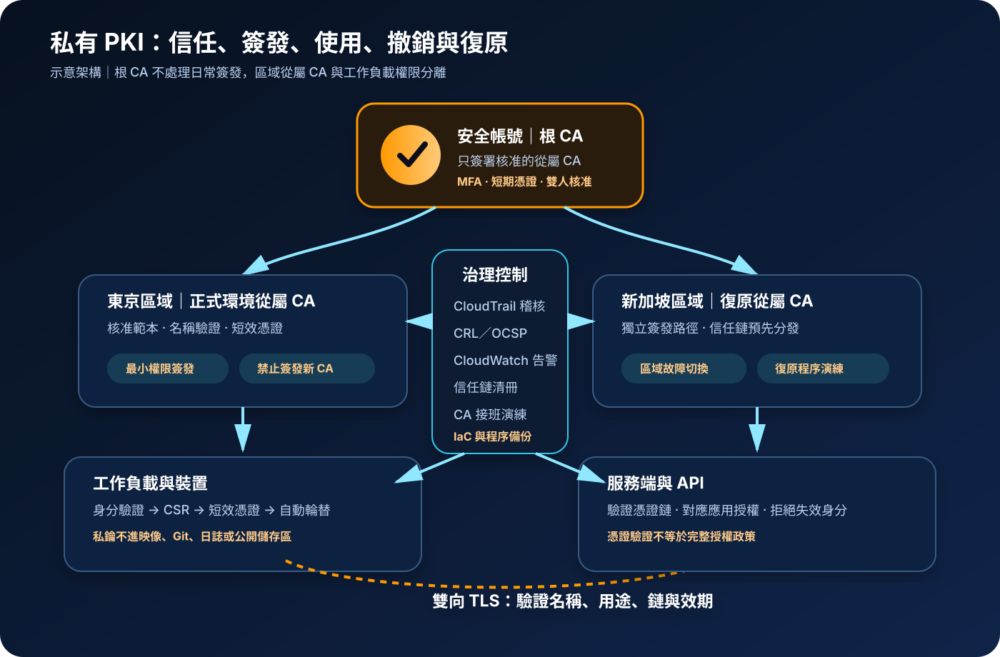

AWS Private CA：私有 PKI、憑證簽發與撤銷治理
AWS Private Certificate Authority（AWS Private CA）提供受管的私有憑證授權中心。核心工作不是單純「發一張內部憑證」，而是建立可長期維護的信任根、從屬 CA、簽發政策、私鑰保護、撤銷資訊、稽核證據與信任分發流程。
作者：Dr. William｜查閱與發布：2026-11-02
服務定位
AWS Private CA 用於建立私有公開金鑰基礎設施（PKI），可管理根 CA 或從屬 CA，並為伺服器、用戶端、裝置、容器、Kubernetes 工作負載、使用者或其他 CA 簽發 X.509 憑證。CA 私鑰由服務保護，客戶透過 AWS API、AWS Certificate Manager（ACM）或整合服務進行簽發與生命週期操作。
服務適合需要企業內部信任、雙向 TLS、裝置身分、短期工作負載身分或既有 PKI 延伸至 AWS 的組織。若只需要對公開網站提供瀏覽器信任，通常應使用 ACM 公有憑證；若只需要應用程式登入與 API 授權，也不能把私有憑證直接視為完整身分治理方案。
核心概念與服務邊界
CA 階層與信任
- 根 CA：信任鏈頂端，應降低日常使用頻率，主要用於簽署從屬 CA。
- 從屬 CA：可依環境、地區、業務或用途切分，負責日常簽發終端憑證。
- 外部父 CA：可讓既有地端或其他 PKI 簽署 AWS Private CA 的從屬 CA。
- 信任存放區：用戶端必須安全取得根與中繼憑證，才會信任私有憑證。
- 路徑長度：限制從屬層級，防止未核准的 CA 階層繼續擴張。
簽發、效期與撤銷
- 憑證範本：限制憑證是否可作為 CA、可用金鑰用途與延伸金鑰用途。
- CSR：包含公開金鑰與申請屬性；核發前仍須驗證申請者身分及名稱授權。
- 一般用途 CA：可簽發不同效期的憑證，適合一般企業 PKI。
- 短效憑證 CA：簽發最長七天的憑證，適合高頻自動輪替的工作負載。
- CRL／OCSP：發布撤銷狀態；短效憑證也可透過快速到期降低撤銷依賴。
適合與不適合的使用情境
適合
- 內部 API、服務網格或零信任存取需要雙向 TLS 與工作負載身分。
- 企業裝置、IoT、VPN、Wi-Fi、使用者或機器需要受控的私有 X.509 憑證。
- Kubernetes、EKS 或短生命週期工作負載需要自動簽發與頻繁輪替憑證。
- 既有企業根 CA 保留在地端，AWS 中建立從屬 CA 服務雲端工作負載。
- 需要以 CRL、OCSP、CloudTrail 與稽核報告追蹤簽發與撤銷活動。
不適合或不能單獨完成
- 公開網站需要一般瀏覽器與作業系統預設信任，卻沒有私有根憑證分發能力。
- 只需要儲存 API 金鑰、資料庫密碼或應用機密；此需求應使用 Secrets Manager 或 Parameter Store。
- 希望憑證自動決定應用層角色與資料權限，卻沒有額外授權政策與身分對應。
- 無法維護信任存放區、CA 接班、撤銷、金鑰輪替、災難復原與事件通報。
- 少量、短期測試使用，卻無法接受 CA 運行與每次簽發所產生的固定及變動成本。
示意故事案例：為多帳號製造平台建立工作負載身分
以下為示意案例，不代表特定企業或正式部署。 一家製造企業在兩個 AWS 區域運行設備資料平台。過去每個團隊自行產生自簽憑證，服務名稱、效期與信任鏈沒有一致規則；部分憑證放在容器映像，離職人員建立的長效憑證也沒有撤銷紀錄。
企業把根 CA 放在獨立安全帳號，只用來簽署東京與新加坡的從屬 CA。各區域從屬 CA 分別服務正式環境，測試環境使用另一個階層。簽發角色只能使用核准的終端憑證範本，不能簽發新的 CA；管理者透過 IAM Identity Center、MFA 與短期憑證執行高權限作業。
工作負載啟動時先完成服務身分驗證，再取得短效憑證；憑證與私鑰只寫入記憶體或受限的暫存空間，不放入映像、程式碼與日誌。服務彼此以雙向 TLS 驗證，CloudTrail 保存 IssueCertificate、RevokeCertificate 與 CA 設定變更。CRL 存放於封鎖公開存取的 S3 儲存貯體，再經受控的 CloudFront 路徑提供給需要下載撤銷清單的用戶端。

建置與運作流程
- 定義信任需求：盤點憑證主體、用途、用戶端、信任範圍、效期、法規、區域與離線需求。
- 撰寫 CP／CPS：記錄 CA 階層、簽發政策、角色分離、效期、撤銷、接班、稽核與事件處理。
- 設計 CA 階層：根 CA 儘量只簽署從屬 CA；依正式／測試、地區或業務界線切分從屬 CA。
- 隔離高權限帳號：根 CA 放在專用帳號，使用 Organizations SCP、MFA、短期憑證與變更核准保護。
- 選擇 CA 模式：比較一般用途與短效憑證模式，確認終端憑證最長效期及輪替能力。
- 設定金鑰與簽章：依相容性與政策選擇金鑰演算法、大小與簽章演算法，避免不必要的舊式演算法。
- 限制簽發範本：發行者只能使用核准的終端憑證範本；CA 憑證範本另由高權限角色控制。
- 驗證申請身分：不要只接受 CSR 內容；應驗證裝置、使用者或工作負載是否有權申請該 Subject 或 SAN。
- 建立撤銷機制：依用戶端能力選擇 CRL、OCSP、兩者併用或短效憑證，並測試失效行為。
- 安全分發信任鏈：以受控系統設定、裝置管理或映像流程發布根與中繼憑證，保留版本及回復能力。
- 保護終端私鑰：在工作負載本地產生並限制讀取；避免把私鑰、credential、Access Key、Secret Key、Token、密碼或 cookie 放入程式碼、映像、URL 或日誌。
- 集中稽核：先啟用組織級 CloudTrail，再建立 CA；把重要管理事件與簽發結果送入監控及告警。
- 驗證用戶端行為：測試完整憑證鏈、名稱、用途、效期、時鐘偏移、CRL／OCSP 可達性與撤銷後拒絕連線。
- 演練接班與復原：建立 CA 憑證續期、CA 金鑰輪替、新信任鏈預先分發、跨區替代與疑似外洩處置流程。
成本、可用性與維運考量
AWS Private CA 的成本主要包括每個運行中私有 CA 的月費、簽發的私有憑證，以及使用 OCSP 的費用。一般用途與短效憑證模式的 CA 運行費不同；短效模式限制憑證有效期最多七天。透過 ACM 使用整合服務且無法匯出私鑰的部分私有憑證，計費方式可能不同。CloudTrail、CloudWatch、S3、CloudFront、KMS、資料傳輸及整合服務仍依各自定價計費，實際金額須以查閱日官方定價與帳號用量估算。
私有 CA 是區域資源。跨區工作負載不能假設另一區域 CA 永遠可用，也不能只備份 CA 設定就視為完成 PKI 復原。可用性設計應同時考慮 CA 階層、區域從屬 CA、信任鏈分發、簽發自動化、CRL／OCSP 可達性、DNS、S3、CloudFront、用戶端快取與應用程式在撤銷服務不可用時的 fail-open／fail-closed 行為。
CA 的效期必須長於它所簽發的憑證，並預留接班與信任分發時間。替換 CA 後 ARN 會改變，硬編碼參照可能中斷。刪除 CA 前必須確認沒有仍依賴其簽發、撤銷或稽核能力的系統；除已刪除或失敗狀態外，多數 CA 狀態仍可能持續計費。
AWS Private CA 特有資安風險與控制
- 根 CA 遭日常濫用：根 CA 儘量只簽署從屬 CA，放在獨立帳號，限制登入並要求 MFA、短期憑證及雙人核准。
- 管理者與發行者權限混用：分離 CA 建立／刪除、CA 憑證簽署、終端憑證簽發與撤銷角色。
- 範本權限過寬：以 IAM 最小權限限制可用模板，防止終端憑證發行者建立從屬 CA 或加入未核准用途。
- CSR 屬性未驗證：CSR 中的 Subject、SAN 與公開金鑰不能直接視為可信；簽發系統必須驗證名稱所有權與申請者身分。
- 長效憑證擴大外洩影響：依工作負載能力縮短效期、自動輪替，避免把多年有效的憑證用於彈性運算與容器。
- 私鑰出現在映像或日誌：端點本地產生私鑰，限制檔案權限與程序存取；必要時使用 HSM、TPM 或其他受控金鑰儲存。
- 信任鏈未受控分發：根憑證以已驗證管道發布，使用雜湊或簽章驗證，保留版本清冊與撤回程序。
- CRL 儲存貯體公開：啟用 S3 Block Public Access，以 CloudFront 或受控路徑分發；避免暴露不必要的內部 PKI 結構。
- 撤銷資訊延遲：OCSP 與 CRL 都不是即時同步；依風險搭配短效憑證、連線終止、身分停用及端點封鎖。
- 更新撤銷設定破壞舊憑證：變更 CRL 路徑、CNAME 或 OCSP 設定前建立相容期；既有憑證可能需要重新簽發。
- OCSP 端點可達性假設錯誤：確認用戶端能連線到回應端；私有網路若不允許公開端點，需設計代理或替代撤銷機制。
- CA 效期先於終端憑證：簽發政策檢查父 CA 剩餘效期，提前規畫 CA 憑證延長或新 CA 接班。
- CA 輪替造成硬編碼中斷：集中管理 CA ARN 與信任鏈版本，先佈署新信任，再逐步切換簽發來源。
- 跨帳號共享失控：透過 AWS RAM 與資源型政策限制可使用的帳號、組織及範本，持續盤點共享關係。
- 稽核只看到中介服務：若整合服務代表原始工作負載簽發，另保留可追溯原始申請者的應用稽核與關聯識別碼。
- 監控與備份不足：以 CloudTrail、CloudWatch 與 Security Hub 監控設定及異常簽發；備份 CP／CPS、信任鏈、IaC、清冊與復原程序。
- 應用機密混入 PKI 流程：非憑證機密使用 Secrets Manager 或 Parameter Store 並以 KMS 加密，不放入 Subject、SAN、標籤或日誌。
共同責任邊界
AWS 負責 AWS Private CA 服務與底層基礎設施安全，保護服務管理的 CA 私鑰，並提供 CA 建立、簽發、撤銷、CRL、OCSP、稽核與整合能力。AWS 不會替客戶決定正確的 CA 階層、核准每個名稱、驗證每個 CSR 申請者，也不會自動把私有信任鏈安全分發到所有端點。
客戶負責 PKI 政策、帳號與角色分離、IAM 最小權限、MFA／短期憑證、網路隔離、公開存取控制、憑證範本、信任鏈分發、終端私鑰、撤銷策略、監控、事件應變及 CA 接班。KMS、Secrets Manager／Parameter Store、CloudTrail／CloudWatch、備份與跨區復原應依架構適用性納入，但不能取代對 PKI 生命週期本身的治理。
上線與維運可執行檢查清單
- □ 已完成 CP／CPS，記錄 CA 階層、角色、效期、範本、撤銷、輪替與事件流程。
- □ 根 CA 只執行必要的從屬 CA 簽署，並位於隔離帳號。
- □ 正式、測試、地區或業務信任邊界已合理切分，沒有共用不必要的 CA。
- □ CA 管理者、終端憑證發行者、撤銷者與稽核者已分權。
- □ 高權限操作使用 MFA 與短期憑證，未建立非必要的長期 Access Key。
- □ SCP、IAM 與資源型政策只允許核准帳號、角色及憑證範本。
- □ 終端憑證發行者無法使用 CA 憑證範本或建立更深的信任階層。
- □ CSR 的 Subject、SAN、公開金鑰與申請者身分有獨立驗證流程。
- □ 憑證效期符合用途，短生命週期工作負載具備自動輪替能力。
- □ 父 CA 剩餘效期足以涵蓋新憑證，CA 接班開始時間已有門檻。
- □ 根與中繼憑證透過受控管道分發，端點可驗證來源與版本。
- □ 終端私鑰不會出現在程式碼、容器映像、Git、日誌、工單、聊天或公開儲存區。
- □ 已依用戶端能力啟用 CRL、OCSP、兩者或短效憑證，並記錄選擇理由。
- □ CRL 的 S3 儲存貯體已封鎖公開存取，分發路徑與快取時間經過測試。
- □ OCSP／CRL 不可用、延遲或過期時，用戶端行為符合風險政策。
- □ 組織級 CloudTrail 在 CA 建立前已啟用，管理與簽發事件集中保存。
- □ CloudWatch 告警涵蓋 CA 狀態、異常簽發量、撤銷失敗、到期與重要設定變更。
- □ 跨帳號 CA 共享清冊包含擁有者、使用者、用途、範本與撤銷責任。
- □ CA 憑證延長、CA 金鑰輪替與 ARN 變更已在測試環境演練。
- □ 另一區域無法簽發、撤銷服務中斷及根 CA 疑似外洩情境已完成復原演練。
- □ IaC、信任鏈、公鑰、清冊、CP／CPS 與復原程序有受控備份；CA 私鑰不會被匯出備份。
- □ 非憑證機密使用 Secrets Manager 或 Parameter Store，並以適用的 KMS 金鑰保護。
- □ 正式內容與設定紀錄不含任何真實 credential、Access Key、Secret Key、Token、密碼或 cookie 值。
AWS 官方一手來源
- What is AWS Private CA?（查閱：2026-11-02）
- Architect your solution for AWS Private CA（查閱：2026-11-02）
- AWS Private CA best practices（查閱：2026-11-02）
- Certificate authorities in AWS Private CA（查閱：2026-11-02）
- Plan your certificate revocation method（查閱：2026-11-02）
- Update a private CA（查閱：2026-11-02）
- Security in AWS Private CA（查閱：2026-11-02）
- Logging AWS Private CA API calls using CloudTrail（查閱：2026-11-02）
- Understand AWS Private CA status（查閱：2026-11-02）
- AWS Private CA pricing（查閱：2026-11-02）
- AWS Shared Responsibility Model（查閱：2026-11-02）
內容說明
本文依查閱日可用的 AWS 官方文件整理，作為基礎學習與架構討論材料；實際部署仍須依最新區域支援、CA 模式、憑證範本、演算法、定價、撤銷能力、用戶端相容性、法規與復原測試結果調整。